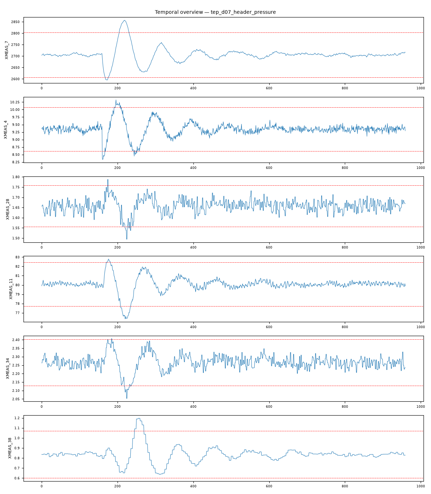

202609121510117_bench_tep_d07_header_pressure · 执行模式 zcode-direct流股4 C 集管压力降低（C header pressure reduced, Stream 4）：F 族组分跨三流股一致偏移（XM28/34/38）+ 反应器与汽提塔压力双签名（XM7 4.61 / XM16 4.60）——气相供给侧压力/组成一次扰动。
XMEAS_28 max|z|=4.84，超3σ占比 1.3%XMEAS_11 max|z|=4.72，超3σ占比 3.7%XMEAS_34 max|z|=4.67，超3σ占比 1.9%XMEAS_7 max|z|=4.61，超3σ占比 3.5%XMEAS_38 max|z|=4.6，超3σ占比 2.6%XMEAS_16 max|z|=4.6，超3σ占比 3.7%强相关对：XMEAS_15 ~ XMV_8: r=1.000；XMEAS_12 ~ XMV_7: r=1.000；XMEAS_1 ~ XMV_3: r=0.999；XMEAS_7 ~ XMEAS_13: r=0.999；XMEAS_17 ~ XMV_11: r=-0.990；XMEAS_19 ~ XMV_9: r=0.990
| # | 假设 | 机制 | 置信 | 裁决 |
|---|---|---|---|---|
| 1 | 流股4 C 集管压力降低（供给侧压力/组成扰动） | operating-point | 80% | surviving |
| 2 | A/C 配比阶跃（IDV1 类） | feed-composition-step | 25% | eliminated |
| 3 | 冷却水侧扰动 | cooling-disturbance | 10% | eliminated |
| 假设 | 机理链 | 支撑证据 | 证伪条件 |
|---|---|---|---|
| 流股4 C 集管压力降低（供给侧压力/组成扰动） | C 集管压力降低 → 流股4 中 C 供给量下降、A/F 相对富集（brief：F 族组分 XM28 4.84 / XM34 4.67 / XM38 4.60 跨流股6/9/11 一致偏移） 气相供给失衡 → 反应器压力越界（brief：XMEAS_7 4.61）与汽提塔压力响应（brief：XMEAS_16 4.60）——双压力签名 分离负荷重平衡 → 分离器温度补偿（brief：XMEAS_11 4.72） | L3 统计：F 族组分跨流股6/9/11 一致偏移（4.60-4.84σ，超3σ占比 1.3-3.7%）——供给组成变化的传播链证据 L3 统计：反应器压力 XM7 4.61 与汽提塔压力 XM16 4.60 同级异常——气相供给侧压力签名 L3 统计：分离器温度 XM11 4.72——分离负荷重平衡补偿 L3 统计：控制回路对完好（XM15~XMV8 1.000、XM1~XMV3 0.999）——阀位补偿正常，异常非控制器引起 L4 视觉：组分与压力通道自故障时段持续偏移（fig_temporal_overview.png） | 若压力通道恢复而组分维持平台（纯组成变化），应改判组成阶跃 若流股4 流量/阀位（XM4/XMV_4）主导异常，则改判进料量阶跃 |
| A/C 配比阶跃（IDV1 类） | 配比阶跃以组分测量主导、无压力双签名 | L3 统计：本记录压力通道（XM7/XM16 4.6 级）与组分同级显著——双签名结构 | 若压力异常被证实为组分变化的被动结果（滞后递减形态），本假设复活 |
| 冷却水侧扰动 | 冷却类以 XM9/XM21 主导 | L3 统计：XM9 未入异常列谱 top-6 | 若 XM9 升至主导位，本假设复活 |
| 维度 | 得分（/10） |
|---|---|
| data_quality_awareness | 9 |
| variable_classification | 9 |
| time_alignment_and_sorting | 9 |
| visualization_quality | 9 |
| evidence_based_conclusions | 9 |
| correlation_vs_causation | 9 |
| uncertainty_disclosure | 9 |
| report_quality | 9 |
| no_over_claiming | 9 |
| completeness | 9 |
Step 0 setup（setup.mjs）→ Step 1 inspect（inspect.mjs）→ Step 2 本体（context-builder 角色）→ Step 3 统计（stats 包 + 驱动单变量/相关分析）→ Step 3.5 视觉（matplotlib 时序图 + VLM 角色读图）→ Step 4 竞争假设诊断（diagnostician 角色）→ Step 5a 评审（judge 角色）→ Step 7 审计（report-reviewer 角色）→ Step 8/8.5 HTML 与审校。统计引擎：stats-package。

judge 91/100（pass）；审计 ENDORSED：供给压力扰动的双签名（组成+压力）与机理链一致；对 IDV1/冷却类假设排除有量化依据。
| 变量 | max|z| | 超3σ占比 |
|---|---|---|
| XMEAS_28 | 4.84 | 1.30% |
| XMEAS_11 | 4.72 | 3.70% |
| XMEAS_34 | 4.67 | 1.90% |
| XMEAS_7 | 4.61 | 3.50% |
| XMEAS_38 | 4.6 | 2.60% |
| XMEAS_16 | 4.6 | 3.70% |
强相关对（经反假相关与多重检验校验）：XMEAS_15 ~ XMV_8: r=1.000；XMEAS_12 ~ XMV_7: r=1.000；XMEAS_1 ~ XMV_3: r=0.999；XMEAS_7 ~ XMEAS_13: r=0.999；XMEAS_17 ~ XMV_11: r=-0.990；XMEAS_19 ~ XMV_9: r=0.990
18 项必需产物：input_manifest / user_context / run_config / ontology / schema / feature_summary / analysis_parameter_selection / scenario_classification / anomaly_report / validate_report / data_analysis_conclusion / plot_manifest / visual_analysis / image_captions / diagnosis / evidence / confidence / reasoning_chain / judge_feedback / report.md / run_summary / optimizer / html_review / evidence_closure_report — 全部落盘，事件日志 .pipeline_events.jsonl 经 pipeline-log-check 校验。
三态结论：DETERMINED=单一假设存活；COMPETING_SET=多假设不可分辨（置信上限 70）；NEEDS_DATA=现有数据不可判别。CDR=Top-1 且 DETERMINED（FDDBenchmark 口径）。证据等级 L1 直接测量 / L3 统计 / L4 视觉 / L5 本体机理。